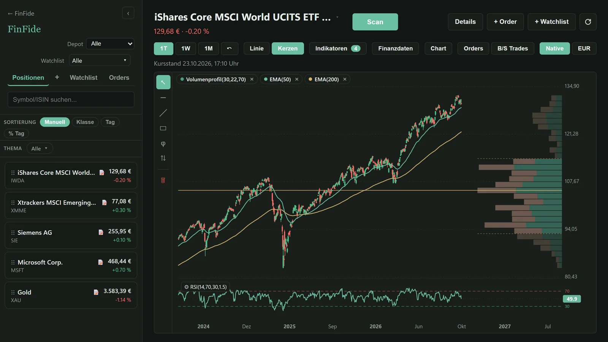
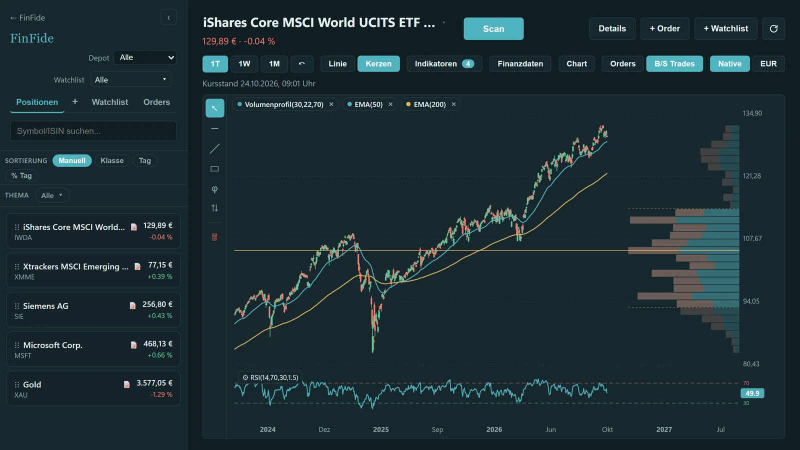
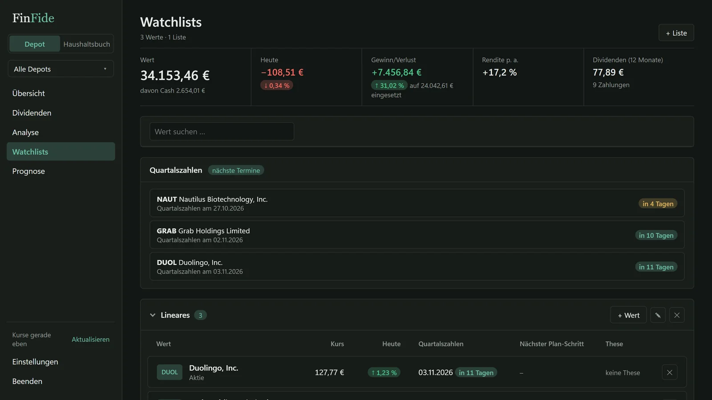

Chartanalyse offline – Indikatoren ohne Limit, Watchlists nach Thema.
Ein eigenes Analyse-Fenster, auch mehrere nebeneinander: Indikatoren als Setup speichern, Watchlists nach Thema führen, eigene Bedingungen per Scan über ganze Listen prüfen. Werkzeuge für eigene Entscheidungen, keine Empfehlungen.

- Was
- Chartanalyse mit Watchlists und Scan
- Indikatoren
- ohne Limit, als Setup speicherbar
- Kurse
- verzögert aus öffentlichen Quellen, nicht in Echtzeit
- Daten
- lokal, keine Anmeldung
Indikatoren und Setups
Gleitende Durchschnitte, RSI, MACD, Volumenprofil und mehr – ohne Begrenzung der Anzahl.
- Indikatoren ohne LimitBeliebig viele je Chart; Auswahl mit Suchfeld.
- Setups speichernEine Zusammenstellung als Setup ablegen und per Klick wechseln.
- Zeichnen, Notizen, OrdersTrendlinien bleiben gespeichert; Anlagethese je Wert; Limit-Orders als Merkzettel.
- Eigene Käufe im ChartEinstiege und Verkäufe aus dem Depot direkt sichtbar.


Watchlists nach Thema, Scan auf Knopfdruck
Eigene Listen wie „Raumfahrt“ oder „KI & Chips“, Werte direkt vergleichen.
- Mehrere WatchlistsBeliebig viele, nach Thema benannt.
- Scan über eine ListeEigene Bedingungen prüfen – je Bedingung wählbar in Tages-, Wochen- oder Monatskerzen.
- Aus dem Depot übernehmenWerte aus dem Depot lassen sich in Listen aufnehmen.

Häufige Fragen zur Chartanalyse.
Wie viele Depots, Watchlists und Charts sind möglich?
Beliebig viele. Es gibt keine Begrenzung bei Depots, Watchlists, Charts oder Indikatoren.
Gibt es Echtzeit-Kurse und Kursalarme?
Nein. Die Kurse kommen verzögert aus öffentlichen Quellen. Wer im Minutentakt handelt, ist mit einem Trading-Werkzeug besser bedient. Ein Alarm-Dienst ist nicht Teil von FinFide.
Gibt FinFide Kauf- oder Verkaufsempfehlungen?
Nein. Indikatoren, Scan und Thesen-Check sind Werkzeuge für eigene Entscheidungen. Es werden keine Empfehlungen gegeben und keine Anlageberatung geleistet.
Woher kommen die Kurse?
Aus öffentlich zugänglichen Kursquellen im Internet (zum Beispiel Yahoo Finance und CoinGecko). Ohne Internet zeigt FinFide die zuletzt geladenen Kurse; Haushaltsbuch und Buchungen funktionieren weiter.
Werden Finanzdaten in die Cloud hochgeladen?
Nein. Alle Daten bleiben auf dem eigenen Rechner – kein Konto, kein Cloud-Sync, kein Server. Kurse werden anonym über öffentliche Schnittstellen abgerufen, ohne Bezug zum Depot.